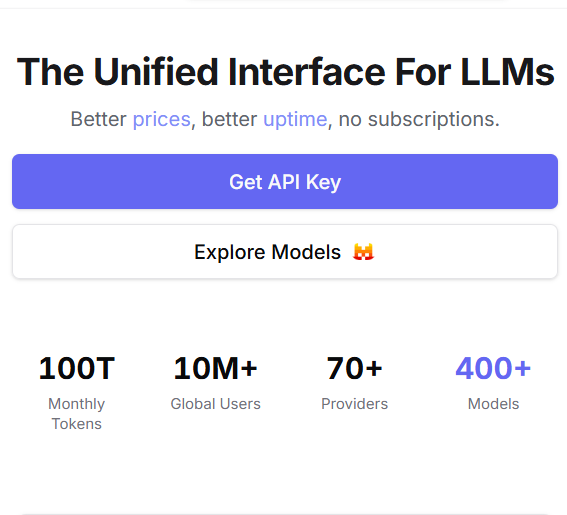
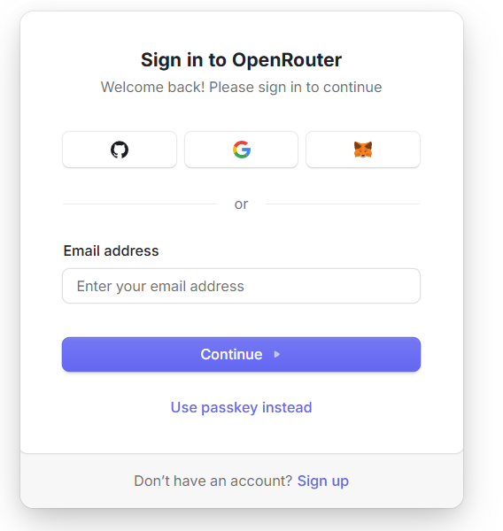
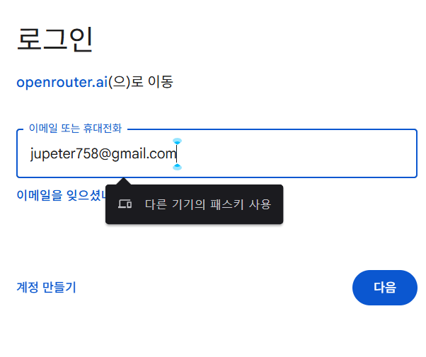
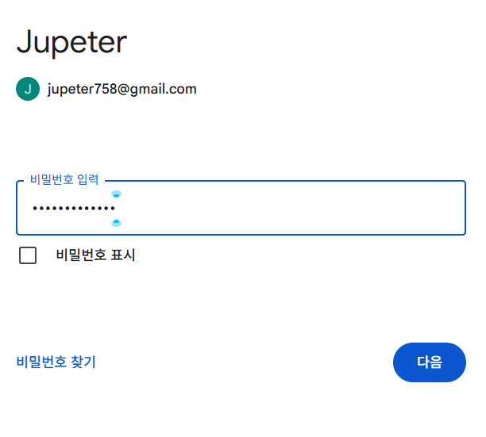
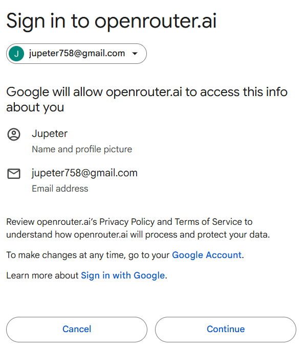
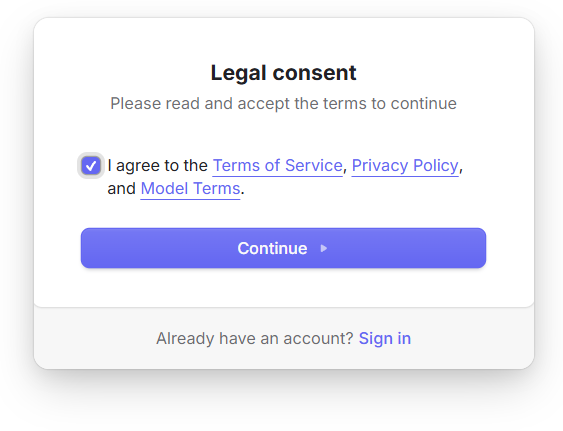
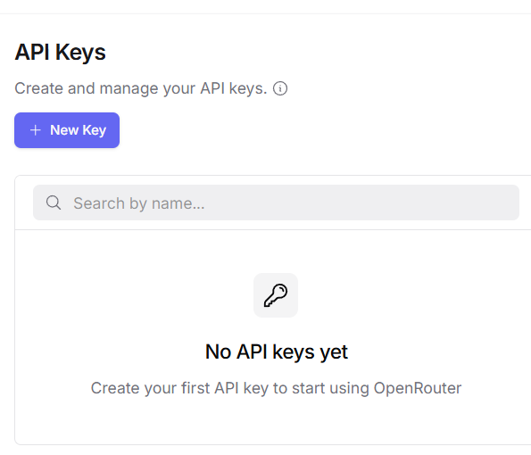
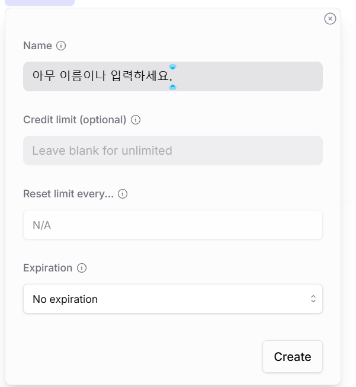
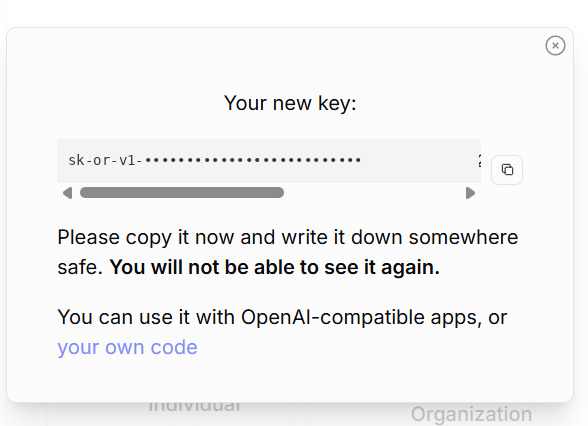

🌐 OpenRouter는 카드 등록 없이 DeepSeek·Llama·Qwen 등 여러 무료 AI 모델을 키 하나로 이용할 수 있는 서비스입니다.
아래 9단계를 그대로 따라하면 약 2분 안에 나만의 AI 비서 설정에 필요한 API Key를 발급받을 수 있습니다.
openrouter.ai/keys 바로가기 ↗openrouter.ai로 접속합니다. 메인 화면 상단의 보라색 Get API Key 버튼을 클릭합니다.
(회원이 10M명 이상, 모델 400개 이상을 지원하는 검증된 서비스입니다.)






openrouter.ai/keys 페이지로 이동합니다. 아직 발급된 키가 없으므로
"No API keys yet"라고 표시됩니다. 왼쪽 위 보라색 + New Key 버튼을 클릭합니다.

hondi)을 입력합니다. Credit limit은 비워두면 무제한,
Expiration도 No expiration으로 그대로 두면 됩니다. 입력 후 Create를 클릭합니다.

sk-or-v1-로 시작하는 키가 단 한 번만 표시됩니다. 오른쪽 복사 아이콘을 눌러 즉시 복사하세요.
이 창을 닫으면 다시 볼 수 없습니다.
